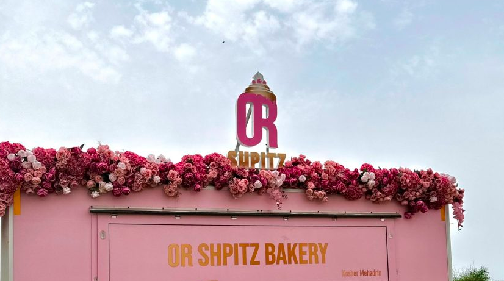

מה הם שעות הפתיחה של הבייקרי בתל אביב ?
שעות הפתיחה
פתוח בין השעות: 10:00-22:00 ערבי שבת וחג עד השעה 14:00
טוב זאת שאלה ממש קשה,אבל אני חושבת שהקוראוסונים שלנו ממש אהובים על הקהל
יש לנו מגוון טעמים חדשים כמו: אוראו ,קורנפלקס,לוטוס,תות ,פטל,פררו ועוד..
שווה לבוא מרחוק!
האם אפשר להזמין היום ולקבל מחר?
כן, בוודאי!!ניתן להזמין כל יום עד השעה 00:00
המשלוחים מגיעים לכל אזור המרכז:
אלעד,בני ברק,פתח תקווה,באר יעקב,תל אביב,גבעתיים,גני תקווה,רמת גן
39 ש"ח
אכן,והם טעימים לא פחות!
האם אתם מכינים הכל במקום ?
ברור,כל המאפים שלנו הם עבודת יד ,עם חומרי גלם איכותיים ביותר,מי שטעם מבין...
